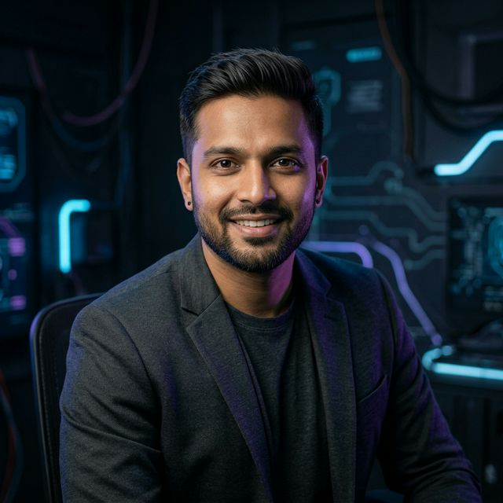

Abhinav Anand
Senior Software & AI Systems Engineer
Senior Software & AI Systems Engineer with strong experience building and scaling enterprise AI-driven platforms in financial services and consulting environments. Proven expertise in designing cloud-native, distributed systems on AWS, delivering business-critical solutions including credit risk assessment platforms, vulnerability management forecasting, enterprise AI assistants, and automated reporting systems. Demonstrated ability to own end-to-end solution delivery across data engineering, backend microservices, and AI system orchestration.